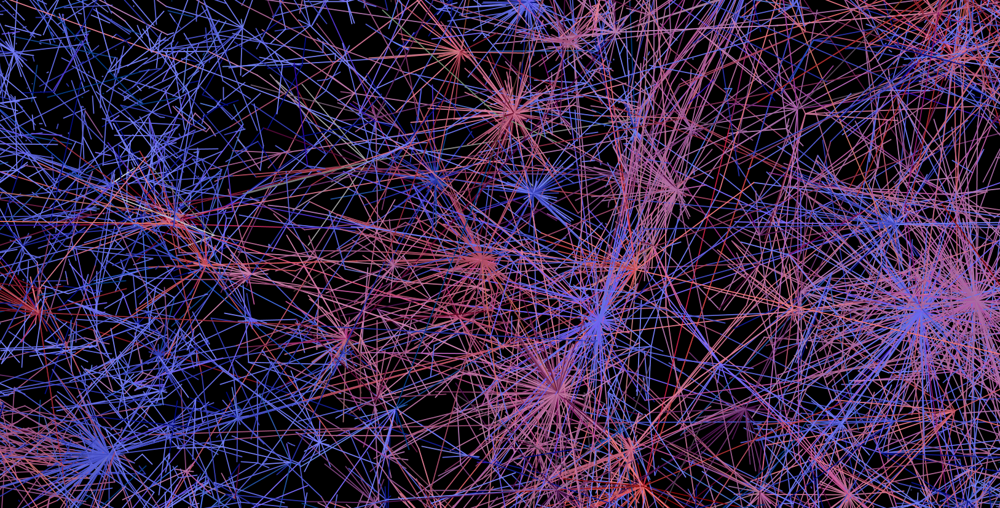
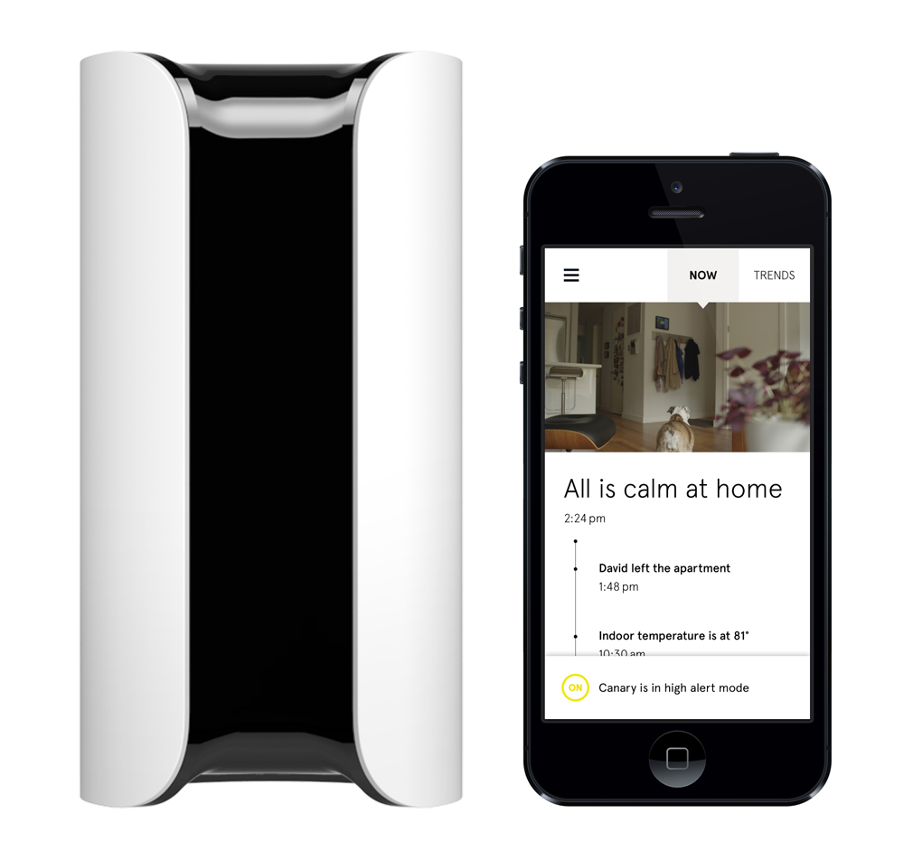
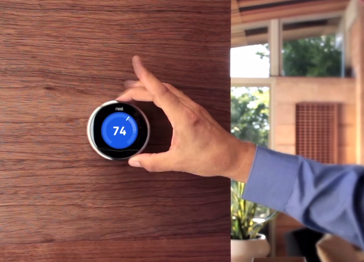
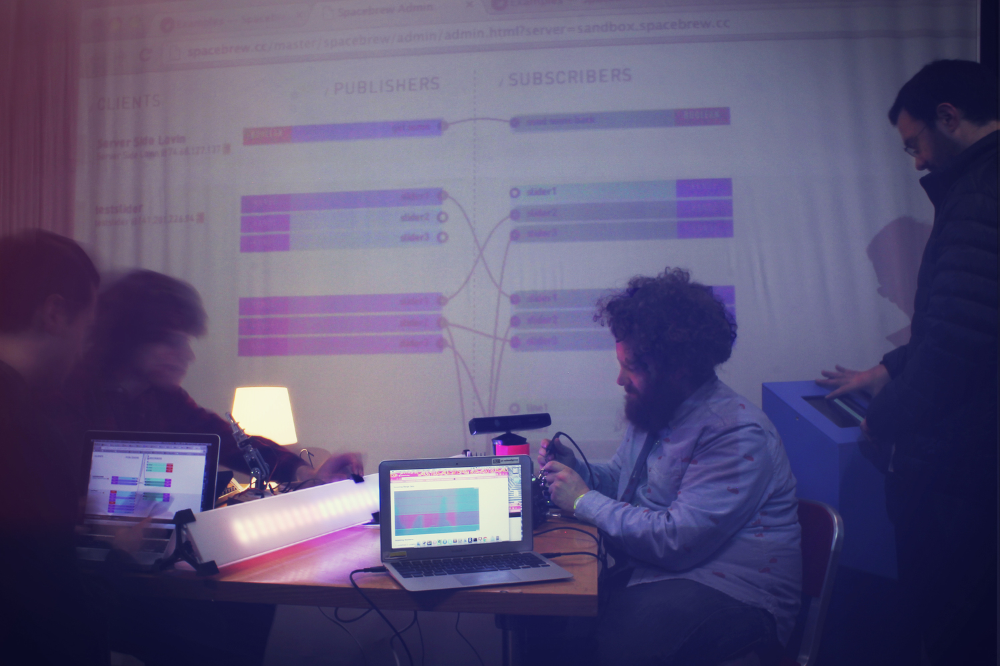

Un/Real Spaces: Art in the "virtual" realm
University of Oregon 12.03.2015Our experience, mediated by technology.
- What does it mean?
- Is it a novel phenomenon?
- Where do artists fit in?
Our experience, mediated by technology.
One of the primary innovations of contemporary technology studies has been the recognition that technology does not stand apart as an external force that impacts society and culture. Rather, technologies are embodiments of social and cultural structures that in turn, get taken up in new ways by existing social groups and cultural categories.
From `networked publics` introduction by Mizuko Ito [Cultural Antrhopologist]Recognizing Networks
Networks are drastically changing our spaces, ways of life and impacting our culture and social norms. Again, it is important to remember that this is not necessarily a `novel` 21st century phenomenon. Think about mail, telegrams and telephones as precursors.
Internet Of Things
Networks augment objects with connectivity and computation power, effectively augmenting our physical spaces. This Machine to Human or Machine to Machine communiation mesh network is referred to as `Internet of Things`

IOT Applications
From making homes `smarter` using connected security cameras to our pocket computers, to adaptively adjusting our living environment's temperature, IOT has already established its own market.
IOT Applications
From making homes `smarter` using connected security cameras to our pocket computers, to adaptively adjusting our living environment's temperature, IOT has already established its own market.
Creative IOT Applications
Artist's curiosity lead them to experiment with their contemporary technology as medium. Spacebrew is an example of programmatically augmenting space.
Creative IOT Applications
Artist's curiosity lead them to experiment with their contemporary technology as medium. Spacebrew is an example of programmatically augmenting space.
Spacebrew IOT
Connected Spaces, oscillating between realities
The proliferation of web sites as virtual representations of physical locations has reached a saturation point. Despite the massive surge of bricks and mortar spaces (such as schools, businesses, organizations) maintaining online presences, there is still little connection between the people simultaneously inhabiting these spaces. Alerting Infrastructure! addresses this by connecting a physical space such as a building to its online counterpart or web site that represents this structure / organization by scanning access logs of web site for new unique visitor “hits” and translating each new site hit into physical output in the form of activating a large, pneumatic jackhammer.
Alerting Infrastructure! by Jonah Brucker-CohenConnected Objects, Augmenting our experience through modifying objects
A smart sneaker with personality that can broadcast its story to the web.
Mediating reality: augmentation
What can re add/remove from the `real`?
Text rain by Camille UtterbackMediating reality: translation
What if you could sing `shapes`?
Mesa di Voce by Golan Levin and Zachary LiebermanMediating reality: modification
What if you could sing `shapes`?
Face substitution by Atruro